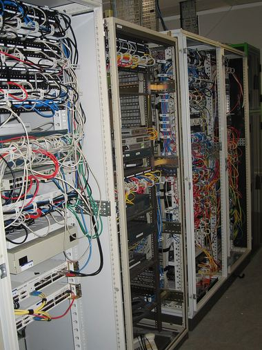
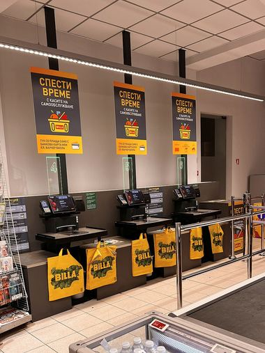

Research programme
Privacy Claims vs Reality is where we start
The signature series takes the three promises the industry repeats most often, no logs, anonymous, and deleted, and tests each one against what the software and the servers actually do.

What “no logs” survives a subpoena
Twelve consumer VPNs, their written claims, their observed connection handling, and what each one has handed over when asked.Deleted accounts that are still there a year later
We delete, we wait, we ask for our data back under access rights, and we publish who returns it.